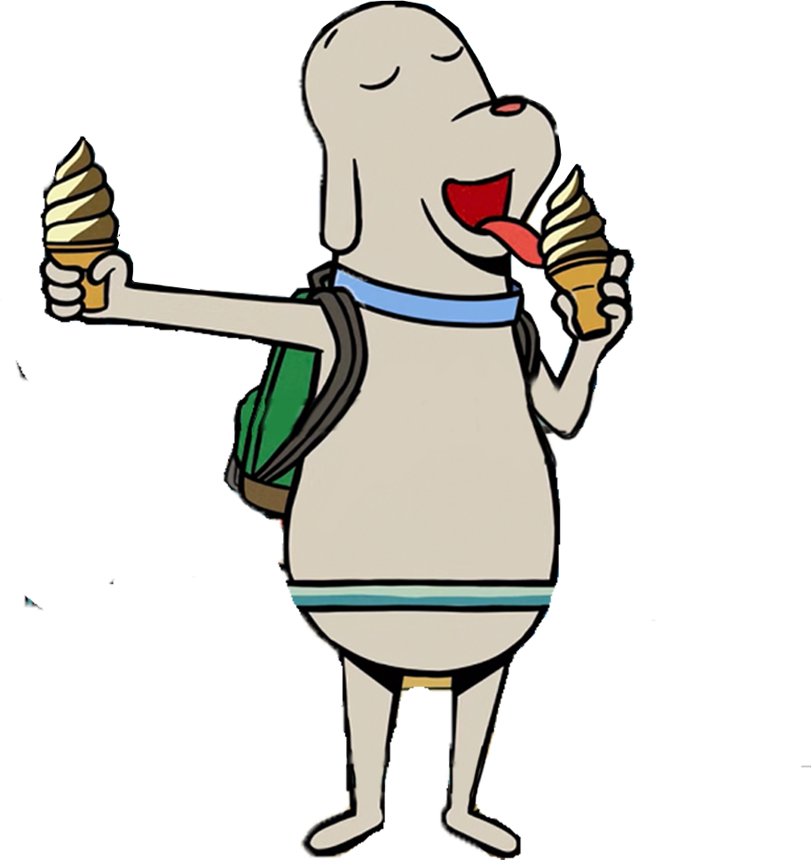
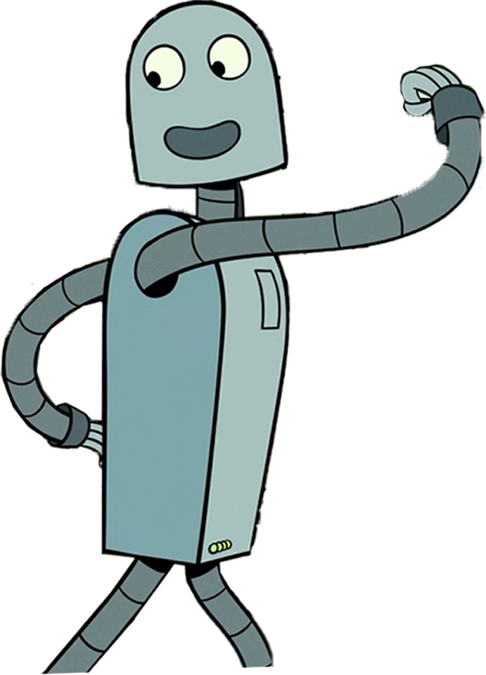
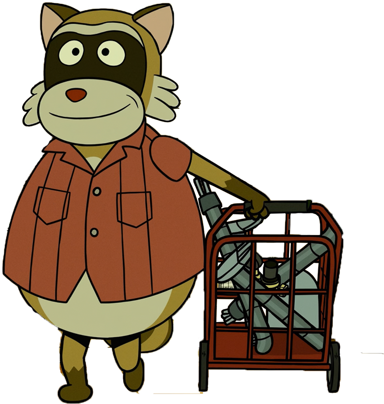
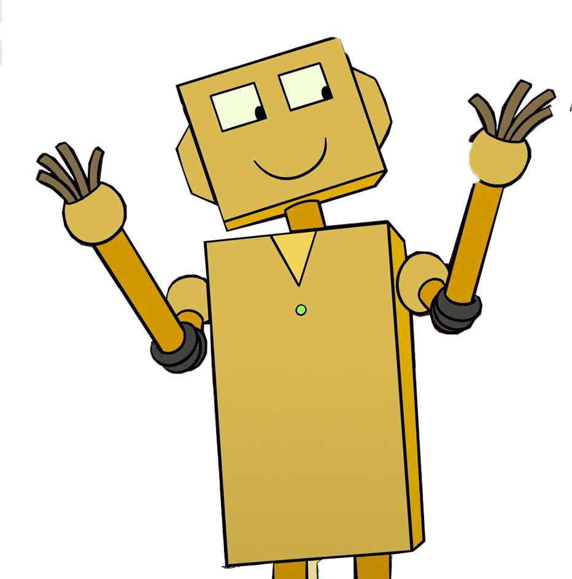

小狗
一只独自生活在单人公寓里的狗。它倍感寂寞，又不敢主动社交，只好给自己订购了一个机器人作伴。它和机器人形影不离，但一次意外事件将它们分离，机器人被留在了沙滩上。虽然它竭尽全力想找回机器人，却总是阴差阳错。在分离的日子里，它交到了新朋友，但始终没有忘记机器人。

机器人
小狗订购的伙伴机器人，在偌大的都市中与小狗相依为命。小狗带它体验生活乐趣，它则对世界充满了好奇。因为意外与小狗分离后，每一个梦的结尾都是按响小狗的门铃。此后，它几经磨难，身体被摔得零零碎碎，也失去了意识。幸运的是，它被小浣熊收留，组装了新身体，过上了新生活。

小浣熊
将已经七零八落的机器人带回家，用旧音响为机器人重新组装了身体，可以说是机器人的“救命恩人”。它真诚纯粹，有生活情调，富有生活技能。帮助机器人开启了新的生活

黄色机器人
小狗失去机器人后在商店里购买的特价伙伴机器人，成为小狗新的伙伴。它们一起看烟花、去海边、吃热狗、跳新的舞蹈……和小狗一起走向了新的生活。

/*